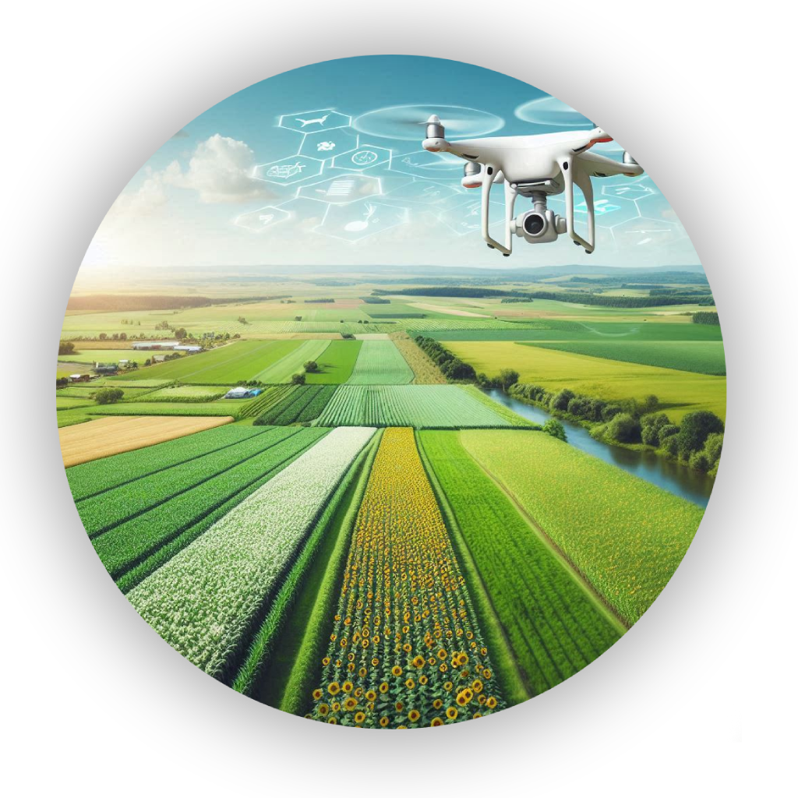

Bem-vindo ao nosso espaço dedicado à inovação, sustentabilidade e ao potencial transformador da tecnologia no campo. Aqui, exploramos como as oportunidades florescem onde a ruralidade encontra a urbanidade, criando um ecossistema de crescimento e prosperidade.

Junte-se a nós nesta jornada de descoberta e aprendizado, onde o campo se transforma em laboratório e a cidade em parceira de inovação. Explore como estamos cultivando oportunidades, colhendo os frutos do progresso e pavimentando o caminho para um amanhã mais verde e conectado.
Benefícios da Interação do Campo e Cidade:
Economia Circular: A produção agrícola alimenta cadeias produtivas que impulsionam a economia urbana, sustentando mercados locais e regionais.
Inovação Tecnológica: Investimentos em tecnologia agrícola aumentam a eficiência da produção e criam novas oportunidades em áreas como engenharia agrícola, desenvolvimento de software e gestão de dados.
Criação de Empregos: A interação do campo e cidade gera empregos diretos e indiretos em agricultura, logística, e comércio de alimentos, promovendo o crescimento econômico inclusivo.
Sustentabilidade Urbana: Iniciativas como a agricultura urbana aumentam a disponibilidade de alimentos frescos, fortalecendo a resiliência das comunidades urbanas.
Colaboração para Desafios Globais: Trocas de conhecimento e tecnologia entre campo e cidade são essenciais para enfrentar desafios como mudanças climáticas e segurança alimentar.